One framework, four matrix functions.
The exponential propagates dynamics, the logarithm recovers generators on a chosen branch, and sine/cosine describe oscillation. Fréchet derivatives explain sensitivity; Padé approximation and scaling provide practical algorithms.
Numbers are measured outputs of the supplied educational notebook, not performance guarantees.
The master equation
The last two identities use the principal logarithm where it exists; \(\log(e^A)=A\) additionally needs a compatible branch.
Define \(f(A)\)
Analyze sensitivity
Approximate locally
Reconstruct and verify
Eigenvalues do not tell the whole story.
A Jordan block adds polynomial factors to the exponential. A stable but nonnormal matrix can show large transient growth before decaying. Noncommuting operators also invalidate scalar addition rules.
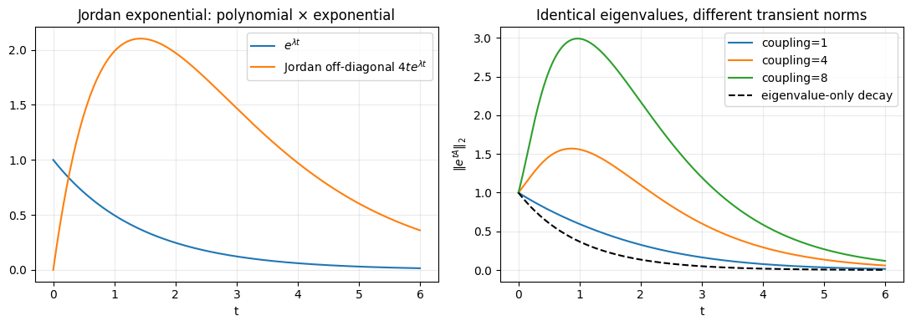
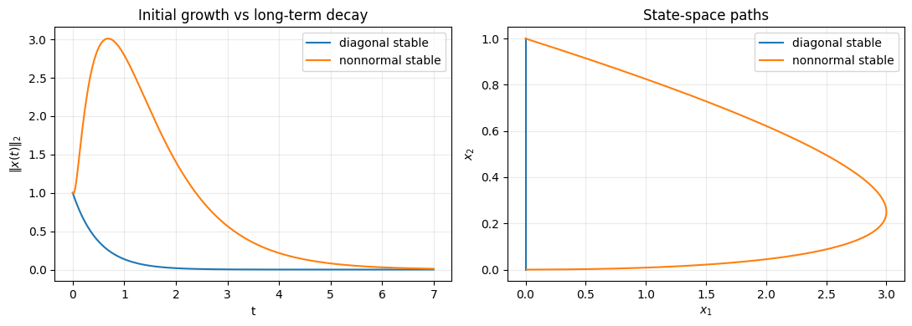
Composition requires commutators
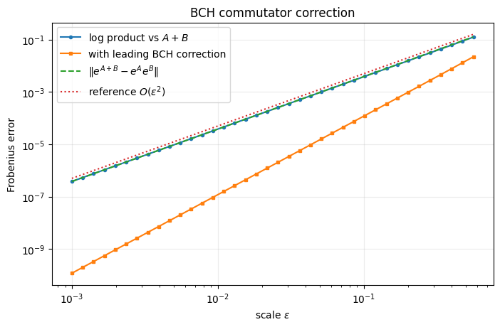
Matrix derivatives are linear operators.
In general \(L_{\exp}(A,E)\ne e^AE\). The notebook compares integral quadrature, exact Fréchet routines, finite differences, and the worst perturbation direction.
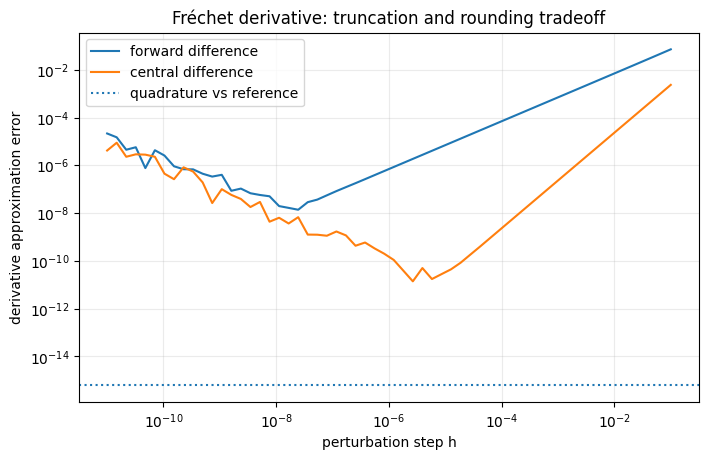
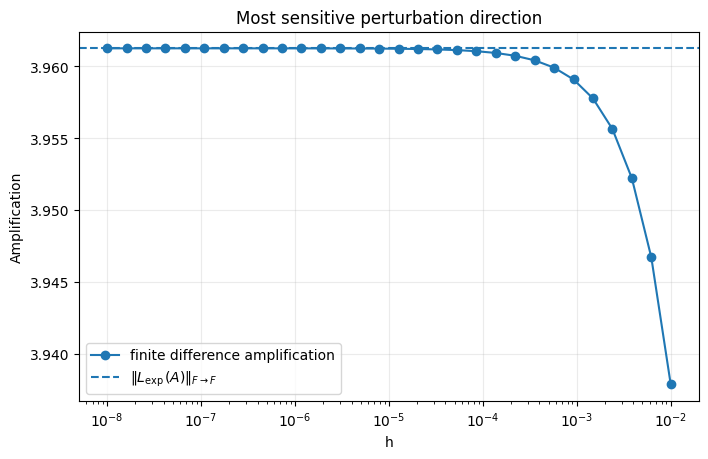
Scale → approximate → reconstruct.
Compute \(e^{A/2^s}\) near the origin using a Padé approximant, then square repeatedly.
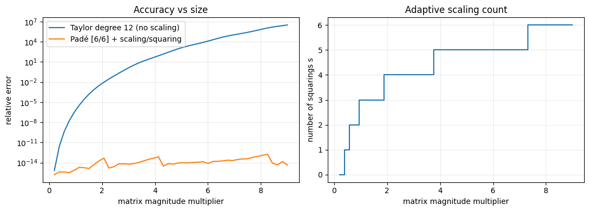
The notebook uses an educational [6/6] Padé implementation, not a production-grade degree/scaling selector.
The matrix logarithm has a branch.
The principal logarithm requires no eigenvalues on the closed negative real axis. In rotation examples, it wraps angles into \((-\pi,\pi)\).
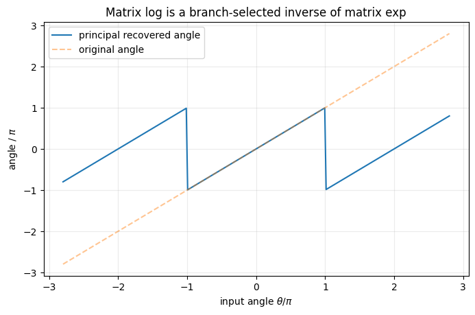
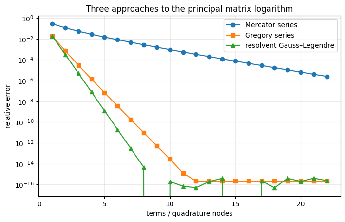
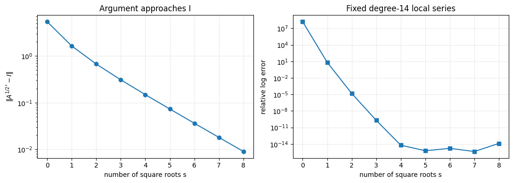
Oscillation is exponential dynamics in disguise.
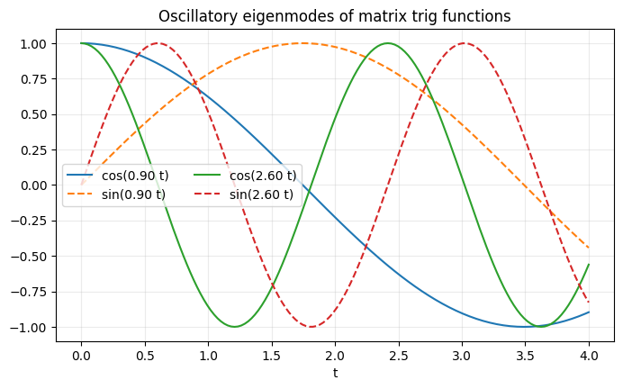
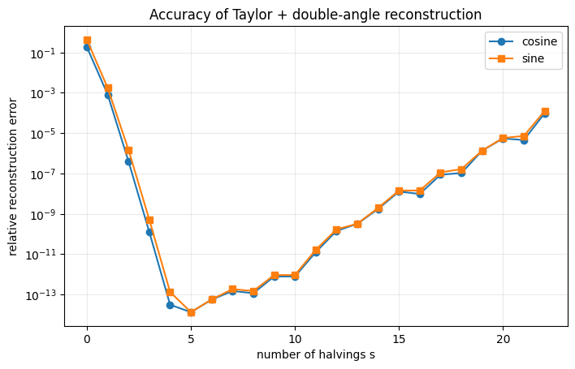
Double-angle reconstruction uses \(C_{k+1}=2C_k^2-I\) and \(S_{k+1}=2S_kC_k\). Too little scaling causes approximation error; too much can amplify roundoff.
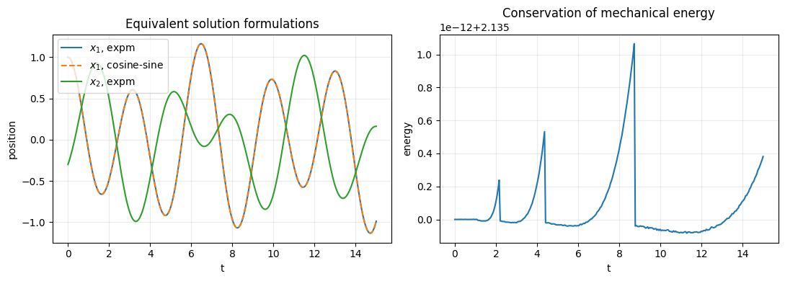
Try the matrix exponential as a rotation.
Rotate a unit vector
Adjust \(\theta\) to see \(e^{\theta J}\) in action. The principal logarithm recovers the wrapped angle, not the unbounded input.
Principal angle: 45.0°
R = [[0.707, −0.707], [0.707, 0.707]]
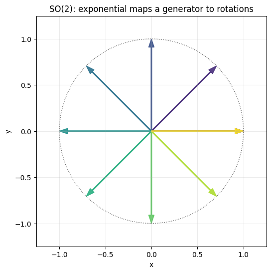
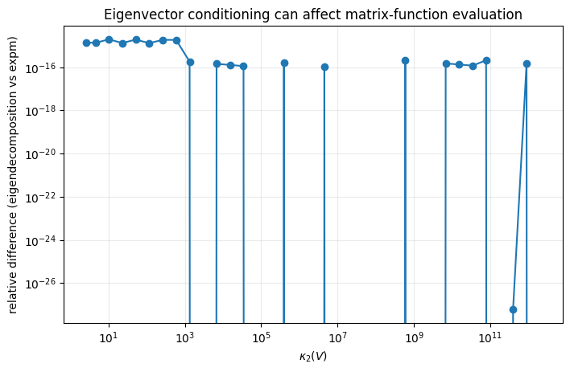
Run every experiment.
The article's plots come from the executed notebook supplied with this project. Figures illustrate particular 2×2 matrices and educational algorithms—not new theorems or general benchmarks.
Dependencies: NumPy, SciPy, Matplotlib · CPU only · no external dataset.
See all 14 experiment figures
Reference & attribution
Nicholas J. Higham, Functions of Matrices: Theory and Computation, SIAM, 2008. Chapters 10 (Matrix Exponential), 11 (Matrix Logarithm), and 12 (Matrix Cosine and Sine). Numerical experiments and plots are from the accompanying educational Colab notebook, not figures reproduced from the book.
Design direction follows the structure of using original page styling adapted for the previous topic.